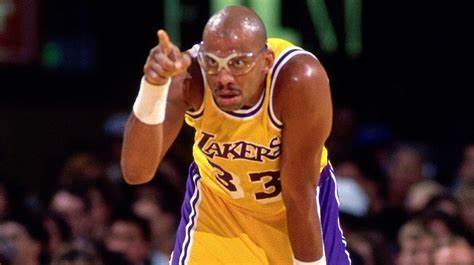

Kareem Abdul-Jabbar nació Ferdinand Lewis Alcindor Jr. el 16 de abril de 1947, en la ciudad de Nueva York, Jabbar medía 22″ pulgadas al nacer, e incluso de muy joven parecía seguir los pasos mucho más grandes de sus antepasados. Su abuelo, oriundo de Trinidad, medía 1,80 metros. Lewis padre, con 1,80 metros de altura, recibía el apodo de Big Al. Incluso la madre de Jabbar, de ascendencia cherokee, medía ella misma 1,70 metros.
Lewis padre, director de orquesta formado en Julliard, complementaba los ingresos de la familia como cobrador y trabajaba también para la policía de la Autoridad de Tránsito de Nueva York. Jabbar nació en Harlem, donde la familia vivía en la calle 111 y la Séptima Avenida. Más tarde se trasladaron a Inwood, una sección diversa de Manhattan.
Familia:
el único hijo de Lewis Sr. y Cora Alcindor. De niño y de joven, Jabbar se hacía llamar Lew Alcindor.

Su carrera en la NBA:
Abdul-Jabbar dejó el baloncesto a la edad de 42 años como el máximo anotador, taponador, reboteador defensivo y el que más partidos y minutos disputó de la historia de la NBA, además de poseer el récord de más MVP de la Temporada (6) y ser el jugador que más All-Star Game ha disputado (19). También fue elegido diez veces en el mejor quinteto de la NBA y cinco en el segundo quinteto. Su lista de logros personales y colectivos es tal vez la más impresionante en la historia de la liga: Rookie del Año, campeón de la NBA en seis ocasiones, con los Bucks (una vez) y los Lakers (en las otras cinco), dos veces MVP de las Finales de la NBA y dos veces máximo anotador de la liga, entre otros muchos.
A pesar de su increíble éxito en la pista, no fue hasta el ocaso de su carrera cuando Abdul-Jabbar se ganó por fin el afecto de los aficionados al baloncesto. Fue un hombre reservado que evitaba a la prensa y que a veces parecía distante. «Soy el peor entre los chicos malos», dijo una vez a la revista The Sporting News. Durante la temporada 1988-89, su última en activo, Abdul-Jabbar fue homenajeado en todas las canchas de la liga.